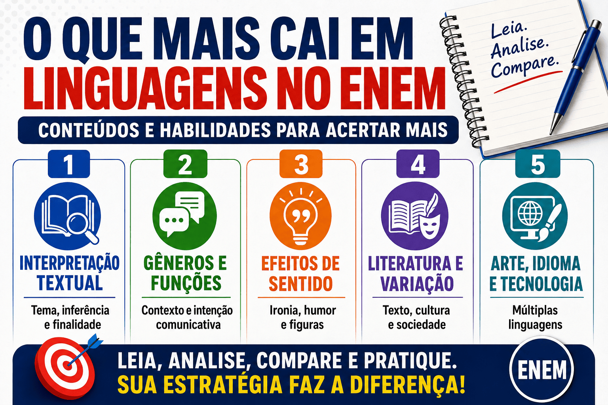

O que Mais Cai em Linguagens no ENEM: conteúdos, habilidades e como estudar
Saber o que mais cai em Linguagens no ENEM ajuda o estudante a organizar sua preparação, estabelecer prioridades e compreender o verdadeiro perfil da prova. Diferentemente de avaliações que exigem apenas a memorização de conceitos, o ENEM privilegia a leitura, a interpretação, a análise dos efeitos de sentido e a aplicação dos conhecimentos em situações concretas de comunicação.
A prova de Linguagens não se limita à gramática e à literatura. Ela também apresenta questões de língua estrangeira, Arte, Educação Física, gêneros digitais, tecnologias da comunicação e diferentes manifestações culturais. Por isso, uma preparação eficiente precisa combinar conhecimentos teóricos com a resolução de textos, imagens, charges, poemas, propagandas, canções, obras de arte e outros materiais.
Neste guia do Mestre Kira, você conhecerá os conteúdos mais recorrentes em Linguagens no ENEM, entenderá como eles aparecem nas questões e descobrirá quais habilidades devem receber maior atenção durante os estudos.

Como é a prova de Linguagens do ENEM?
Na estrutura atual do exame, a prova de Linguagens, Códigos e suas Tecnologias possui 45 questões e é aplicada no primeiro dia, juntamente com Ciências Humanas e a redação.
As cinco primeiras questões correspondem à língua estrangeira escolhida pelo participante: inglês ou espanhol. As demais envolvem conhecimentos de:
- Língua Portuguesa;
- interpretação textual;
- literatura;
- Arte;
- Educação Física e práticas corporais;
- comunicação e tecnologias digitais.
Importante: o Inep não divulga uma quantidade fixa de questões para cada conteúdo. A distribuição pode variar entre as edições. Por isso, a melhor estratégia é priorizar as habilidades mais recorrentes sem abandonar os demais componentes da área.
O ENEM cobra conteúdos ou habilidades?
O ENEM cobra os dois, mas os conteúdos normalmente aparecem como instrumentos para avaliar determinadas habilidades. Isso significa que não basta saber a definição de metáfora, variação linguística ou intertextualidade. O candidato precisa compreender como esses recursos participam da construção do sentido.
Em uma questão sobre conjunções, por exemplo, o exame pode não pedir a classificação gramatical da palavra. Em vez disso, poderá perguntar qual relação de sentido ela estabelece entre duas ideias: causa, consequência, oposição, condição ou conclusão.
Da mesma forma, uma questão de literatura pode apresentar um poema e exigir que o candidato reconheça uma crítica social, uma ruptura estética ou uma visão de mundo, sem solicitar diretamente o nome da escola literária.
Regra de ouro: no ENEM, o conhecimento teórico precisa ser aplicado à leitura do texto. A resposta deve explicar o funcionamento da linguagem naquele contexto específico.
Quais são os conteúdos que mais caem em Linguagens no ENEM?
1. Interpretação e compreensão textual
A interpretação textual ocupa uma posição central na prova de Linguagens. Mesmo quando a questão aborda literatura, gramática, publicidade ou tecnologia, o estudante precisa compreender o texto-base para encontrar a resposta.
Entre as habilidades mais importantes estão:
- identificar o tema e a ideia principal;
- localizar informações explícitas;
- inferir informações implícitas;
- reconhecer a finalidade comunicativa;
- identificar o ponto de vista do autor;
- distinguir fatos de opiniões;
- relacionar informações apresentadas em diferentes partes do texto;
- interpretar palavras e expressões de acordo com o contexto;
- comparar textos que tratam do mesmo assunto.
Nas alternativas, é comum aparecerem opções que reproduzem palavras do texto, mas apresentam conclusões exageradas, incompletas ou incompatíveis com o comando.
Para aprofundar esse conteúdo, consulte o guia sobre interpretação textual para o ENEM.
2. Gêneros textuais e finalidade comunicativa
O ENEM utiliza uma grande diversidade de gêneros. Cada gênero possui uma finalidade, uma estrutura e uma situação de circulação. Reconhecer essas características ajuda o candidato a compreender por que determinado recurso foi utilizado.
Entre os gêneros mais presentes estão:
- notícia e reportagem;
- artigo de opinião;
- crônica e conto;
- poema e letra de música;
- charge, cartum e tirinha;
- anúncio publicitário;
- campanha de conscientização;
- infográfico;
- texto de divulgação científica;
- postagem de rede social;
- verbete, manual e texto instrucional.
Ao encontrar um desses textos, procure identificar:
- quem produziu a mensagem;
- para qual público ela foi produzida;
- em que espaço circula;
- qual é seu objetivo;
- quais recursos são usados para alcançar esse objetivo.
3. Linguagem verbal, não verbal e multimodalidade
Muitas questões combinam palavras, imagens, cores, símbolos, formas, enquadramentos e diferentes tamanhos de letras. Esses materiais são chamados de textos multimodais, pois constroem sentidos por meio de mais de um modo de linguagem.
Esse conteúdo aparece principalmente em:
- charges e tirinhas;
- propagandas;
- cartazes;
- memes;
- infográficos;
- fotografias;
- pinturas e outras obras visuais;
- campanhas educativas.
Nessas questões, a imagem não é apenas decorativa. Ela pode confirmar, complementar, contradizer ou transformar o significado das palavras.
Exemplo: uma propaganda pode apresentar a frase “O planeta pede socorro” ao lado de uma imagem da Terra coberta por plástico. A personificação presente na frase e o elemento visual atuam juntos para sensibilizar o público.
4. Efeitos de sentido
O ENEM cobra frequentemente os efeitos produzidos pelas escolhas linguísticas. Nesses casos, a questão não pergunta apenas qual recurso aparece, mas o que esse recurso provoca no texto.
É importante estudar:
- denotação e conotação;
- ironia e humor;
- ambiguidade e duplo sentido;
- polissemia;
- metáfora, metonímia, antítese e outras figuras de linguagem;
- repetição de palavras e estruturas;
- pontuação expressiva;
- escolha de tempos e modos verbais;
- uso de adjetivos e advérbios avaliativos;
- sentidos produzidos por conjunções e conectivos.
Em vez de apenas memorizar os nomes das figuras de linguagem, pergunte: por que o autor escolheu essa construção e que efeito ela produz?
5. Argumentação e confronto de pontos de vista
Outra habilidade muito importante é reconhecer como diferentes autores constroem e defendem seus posicionamentos. A prova pode apresentar um artigo, uma campanha, uma carta, um discurso ou dois textos com perspectivas distintas sobre o mesmo assunto.
O candidato deve saber identificar:
- a tese defendida;
- os argumentos utilizados;
- os exemplos e dados apresentados;
- as estratégias de convencimento;
- as marcas linguísticas de opinião;
- as semelhanças e divergências entre os textos;
- os interesses e valores envolvidos no discurso.
Palavras como “necessário”, “preocupante”, “infelizmente”, “evidentemente” e “inaceitável” podem revelar avaliações e posicionamentos do enunciador.
6. Coesão, coerência e progressão temática
A coesão está relacionada aos mecanismos que conectam as partes de um texto. A coerência corresponde à construção de uma unidade de sentido. Já a progressão temática permite que o assunto avance sem repetições desnecessárias ou mudanças bruscas.
O ENEM pode explorar:
- conectivos e relações lógico-semânticas;
- pronomes que retomam palavras ou informações;
- substituições lexicais;
- elipses e termos subentendidos;
- repetições intencionais;
- organização dos parágrafos;
- relações de causa, consequência, oposição e conclusão.
Para revisar esses mecanismos, acesse o conteúdo sobre coesão, coerência e progressão temática .
7. Variação linguística
A língua varia de acordo com a região, o grupo social, a época, a idade dos falantes e a situação comunicativa. O ENEM costuma abordar esse assunto valorizando a diversidade linguística e combatendo a ideia de que apenas uma variedade da língua seria legítima.
Os principais tipos de variação são:
- regional: diferenças relacionadas às regiões do país;
- social: usos associados a diferentes grupos sociais;
- histórica: transformações da língua ao longo do tempo;
- situacional: adequação da linguagem ao contexto;
- profissional: vocabulário próprio de determinadas áreas.
Também é importante compreender o preconceito linguístico, que ocorre quando determinada maneira de falar é utilizada para desvalorizar pessoas ou grupos.
Uma variedade linguística não deve ser analisada isoladamente como “certa” ou “errada”. É necessário observar sua adequação à situação comunicativa. Um registro informal pode ser apropriado em uma conversa e inadequado em um documento oficial.
8. Literatura brasileira e relações entre texto e contexto
Nas questões de literatura, o ENEM valoriza menos a memorização de datas e mais a capacidade de interpretar fragmentos, reconhecer características estéticas e relacionar a obra ao seu contexto histórico e social.
Os estudos devem contemplar:
- relação entre literatura e sociedade;
- características dos movimentos literários;
- construção do eu lírico e do narrador;
- representação de identidades e grupos sociais;
- crítica social;
- ruptura e inovação estética;
- linguagem figurada;
- diálogo entre tradição e modernidade;
- literatura afro-brasileira, indígena e periférica;
- relações entre obras de diferentes épocas.
Entre os períodos que merecem atenção estão Romantismo, Realismo, Naturalismo, Pré-Modernismo, Modernismo e literatura contemporânea. O Modernismo costuma ser especialmente relevante por sua influência na linguagem, na cultura e na formação da literatura brasileira contemporânea.
Leia também: análise de obras clássicas para o ENEM .
9. Intertextualidade
A intertextualidade ocorre quando um texto estabelece diálogo com outro texto, discurso ou manifestação artística. Ela pode aparecer em poemas, propagandas, charges, músicas, pinturas, filmes e postagens digitais.
As relações intertextuais mais importantes incluem:
- citação;
- alusão;
- paráfrase;
- paródia;
- referência cultural;
- releitura de obras artísticas;
- diálogo entre diferentes gêneros e linguagens.
O candidato precisa reconhecer a referência e compreender como o novo texto preserva, modifica, amplia ou critica os sentidos do texto anterior.
10. Funções da linguagem
As funções da linguagem estão relacionadas ao elemento da comunicação que recebe maior destaque em determinado texto.
- referencial: prioriza a transmissão de informações;
- emotiva: evidencia sentimentos e opiniões do emissor;
- conativa: procura influenciar o comportamento do receptor;
- fática: verifica ou mantém o canal de comunicação;
- metalinguística: utiliza a linguagem para explicar a própria linguagem;
- poética: valoriza a construção estética da mensagem.
No ENEM, uma questão pode combinar várias funções. O objetivo geralmente é identificar qual delas predomina e como contribui para a finalidade do gênero analisado.
11. Gramática contextualizada
A gramática aparece na prova, mas geralmente não por meio de classificações isoladas. O estudante precisa analisar como as estruturas gramaticais modificam o sentido e organizam o texto.
Os assuntos mais importantes são:
- pronomes e referenciação;
- conjunções e conectivos;
- tempos e modos verbais;
- pontuação e efeitos expressivos;
- vozes verbais;
- modalização do discurso;
- relações entre orações;
- concordância e regência em situações de uso;
- ordem dos termos na oração;
- escolhas lexicais.
Em uma questão, o uso do futuro do pretérito pode indicar hipótese ou possibilidade. Uma conjunção adversativa pode introduzir uma quebra de expectativa. Um pronome pode retomar uma informação anterior e garantir a continuidade do texto.
12. Arte e manifestações culturais
A prova de Linguagens também apresenta questões sobre diferentes manifestações artísticas. O estudante pode encontrar pinturas, esculturas, fotografias, performances, músicas, danças, produções audiovisuais e intervenções urbanas.
Os principais enfoques são:
- relação entre arte e contexto histórico;
- função social da arte;
- movimentos artísticos e rupturas estéticas;
- patrimônio material e imaterial;
- diversidade cultural brasileira;
- arte popular, indígena e afro-brasileira;
- releitura e intertextualidade;
- arte contemporânea e novas tecnologias.
O mais importante é observar os elementos visuais da obra e relacioná-los ao contexto, ao tema e à intenção artística.
13. Tecnologias da comunicação e gêneros digitais
A Matriz de Referência do ENEM também contempla as tecnologias da comunicação e da informação. Esse eixo pode aparecer em questões sobre redes sociais, aplicativos, hipertextos, memes, campanhas digitais e circulação de informações.
É importante compreender:
- as características dos gêneros digitais;
- a integração entre texto, imagem, som e vídeo;
- as mudanças nas formas de leitura e escrita;
- a circulação e o compartilhamento de informações;
- os impactos sociais das tecnologias;
- a construção de identidades em ambientes digitais;
- as estratégias de persuasão utilizadas nas redes.
14. Língua estrangeira: inglês ou espanhol
As questões de língua estrangeira exigem principalmente compreensão textual. Em geral, não é necessário traduzir todas as palavras. O candidato deve utilizar o título, o gênero, as imagens, as palavras conhecidas e o contexto para construir o sentido.
Priorize:
- identificação do tema;
- finalidade comunicativa;
- vocabulário contextual;
- palavras cognatas e falsos cognatos;
- humor e crítica;
- expressões idiomáticas;
- relação entre linguagem verbal e visual;
- aspectos culturais dos povos que utilizam a língua.
15. Educação Física, corpo e práticas corporais
As questões de Educação Física não costumam cobrar apenas regras esportivas. Elas relacionam o corpo às dimensões culturais, históricas, sociais e políticas.
Podem ser abordados:
- esporte e cidadania;
- danças, lutas, jogos e brincadeiras;
- padrões corporais e influência da mídia;
- saúde e qualidade de vida;
- inclusão e acessibilidade no esporte;
- identidade cultural;
- lazer e práticas corporais;
- espetacularização do esporte.
Qual deve ser a prioridade nos estudos?
Prioridade muito alta
- interpretação textual;
- gêneros e finalidades comunicativas;
- efeitos de sentido;
- argumentação e pontos de vista;
- linguagem verbal e não verbal.
Prioridade alta
- variação linguística;
- coesão e coerência;
- literatura brasileira;
- intertextualidade;
- gramática contextualizada;
- Arte e manifestações culturais.
Estudo obrigatório e complementar
- inglês ou espanhol;
- tecnologias da comunicação;
- Educação Física e práticas corporais;
- patrimônio e diversidade cultural.
Essa classificação indica uma estratégia de organização, não uma garantia sobre a quantidade de questões. Todos os componentes previstos na Matriz de Referência podem aparecer na prova.
Como estudar Linguagens para o ENEM?
1. Estude por habilidades
Ao resolver uma questão, identifique qual habilidade está sendo avaliada. Pergunte se ela exige inferência, comparação entre textos, reconhecimento da finalidade, análise de uma imagem ou compreensão de um efeito de sentido.
2. Resolva provas anteriores
As provas oficiais ajudam a compreender o vocabulário dos comandos, o tamanho dos textos e o padrão das alternativas. Após cada questão, registre:
- qual conteúdo foi cobrado;
- qual habilidade era necessária;
- por que a alternativa correta responde ao comando;
- por que as demais alternativas estão erradas;
- qual erro levou você a escolher outra resposta.
3. Leia diferentes gêneros
Não concentre sua preparação apenas em textos literários. Leia também reportagens, artigos, campanhas, poemas, tirinhas, infográficos, textos científicos e postagens digitais.
4. Estude gramática dentro do texto
Depois de revisar um tópico gramatical, procure exemplos em textos reais. Observe como pronomes retomam informações, como conectivos organizam os argumentos e como os tempos verbais expressam certeza, dúvida, hipótese ou ordem.
5. Crie um caderno de erros
Organize os erros por habilidade. Se houver muitas dificuldades com inferência, ironia ou comparação de textos, reserve mais tempo para esses pontos. Essa estratégia é mais eficiente do que revisar novamente todos os conteúdos sem estabelecer prioridades.
Estratégia para resolver as questões
- Leia o comando: identifique exatamente o que a questão solicita.
- Reconheça o gênero: observe se o texto é uma notícia, poema, propaganda, charge ou outro gênero.
- Observe a fonte: ela pode revelar o contexto de circulação e o público-alvo.
- Leia com um objetivo: procure no texto as informações relacionadas ao comando.
- Analise os recursos: observe palavras, imagens, pontuação, conectivos e escolhas expressivas.
- Elimine alternativas inadequadas: descarte opções que contradizem, extrapolam ou reduzem indevidamente o sentido do texto.
- Compare as opções restantes: escolha aquela que responde com maior precisão ao comando.
Erros que mais prejudicam o candidato
- responder com base na opinião pessoal;
- ignorar o comando da questão;
- considerar apenas as palavras e desprezar as imagens;
- escolher uma alternativa verdadeira, mas que não responde ao enunciado;
- confundir o tema geral com a ideia principal;
- interpretar expressões figuradas literalmente;
- desconsiderar a fonte e o contexto de circulação;
- estudar gramática apenas por classificações;
- memorizar características literárias sem interpretar textos;
- abandonar Arte, Educação Física ou língua estrangeira.
Resumo: o que mais cai em Linguagens no ENEM
- interpretação e compreensão textual;
- gêneros textuais e finalidade comunicativa;
- linguagem verbal, não verbal e multimodal;
- efeitos de sentido, ironia e humor;
- argumentação e confronto de opiniões;
- coesão, coerência e progressão temática;
- variação e preconceito linguístico;
- literatura e contexto histórico-social;
- intertextualidade;
- funções da linguagem;
- gramática contextualizada;
- Arte e diversidade cultural;
- tecnologias da comunicação;
- inglês ou espanhol;
- corpo, esporte e práticas culturais.
Quiz — O que mais cai em Linguagens no ENEM
Questões de Linguagens — nível ENEM
Questão 1 — Leia a mensagem de uma campanha contra a desinformação:
“Antes de compartilhar, pare. Leia. Confira.”
O emprego de verbos no imperativo contribui para:
Questão 2 — Em uma narrativa, uma personagem afirma:
“Nóis chegou cedo, mas o ônibus já tinha saído.”
A construção da fala da personagem serve principalmente para:
Questão 3 — Uma campanha sobre o uso excessivo de aparelhos eletrônicos apresenta a frase:
“Desligue a tela para se ligar ao mundo.”
O efeito de sentido da mensagem é produzido principalmente:
Questão 4 — Leia os posicionamentos:
Texto I: O trabalho remoto amplia a flexibilidade e reduz o tempo gasto com deslocamentos.
Texto II: O trabalho remoto pode enfraquecer a convivência entre os profissionais e dificultar a separação entre vida pessoal e trabalho.
A relação entre os textos caracteriza-se pela:
Questão 5 — Leia o fragmento poético:
“A cidade acordou apressada,
engoliu passos, buzinas e horas.”
A atribuição de ações humanas à cidade contribui para:
Questão 6 — Um infográfico combina porcentagens, ícones, cores e pequenas explicações sobre o consumo de água.
Nesse gênero, os recursos visuais têm a função de:
Questão 7 — Um poema contemporâneo combina expressões populares, versos livres e cenas do cotidiano urbano.
Essa construção demonstra que a linguagem literária pode:
Questão 8 — Leia a mensagem em inglês:
“Small choices, cleaner oceans. Refill, reuse, repeat.”
A finalidade principal dessa mensagem é:
Perguntas frequentes
Qual é o assunto que mais cai em Linguagens no ENEM?
A interpretação textual é a habilidade mais abrangente, pois está presente em questões de Língua Portuguesa, literatura, Arte, língua estrangeira e outros componentes da área.
O ENEM cobra muita gramática?
A gramática é cobrada principalmente de forma contextualizada. O candidato precisa compreender os efeitos produzidos por pronomes, verbos, conectivos, pontuação e outras estruturas dentro do texto.
É necessário decorar todas as escolas literárias?
É importante conhecer os principais movimentos, mas a prova valoriza especialmente a interpretação do fragmento e a relação entre linguagem, contexto histórico, visão de mundo e projeto estético.
Arte e Educação Física aparecem em Linguagens?
Sim. Esses componentes fazem parte da área de Linguagens e podem aparecer em questões sobre manifestações artísticas, patrimônio cultural, esportes, corpo, saúde, mídia, danças, lutas, jogos e práticas corporais.
Como melhorar a nota em Linguagens?
Combine revisão teórica, leitura de diferentes gêneros, resolução de provas anteriores e análise dos erros. Também é importante treinar a identificação da habilidade exigida em cada questão.
Conclusão
Conhecer o que mais cai em Linguagens no ENEM permite estabelecer prioridades, mas a preparação não deve se limitar a uma lista de assuntos. O exame exige que o candidato interprete textos, relacione linguagens, reconheça pontos de vista e compreenda como diferentes recursos produzem sentidos.
Interpretação textual, gêneros, efeitos de sentido, argumentação, multimodalidade, variação linguística e literatura devem ocupar uma posição central no planejamento. Ao mesmo tempo, língua estrangeira, Arte, Educação Física e tecnologias da comunicação não podem ser ignoradas.
Quanto maior for o contato com textos variados e questões anteriores, maior será a capacidade de reconhecer o que o enunciado solicita, eliminar alternativas inadequadas e responder com segurança.
Referências
- BRASIL. Instituto Nacional de Estudos e Pesquisas Educacionais Anísio Teixeira. Matriz de Referência do ENEM .
- BRASIL. Instituto Nacional de Estudos e Pesquisas Educacionais Anísio Teixeira. Provas e gabaritos do ENEM .
- MESTRE KIRA. Interpretação Textual para o ENEM .
- MESTRE KIRA. Análise de Obras Clássicas para o ENEM .
Explore outros conteúdos
Continue sua preparação para o ENEM com outros materiais do Mestre Kira:
Explore Outros Conteúdos
Continue seus estudos acessando outras seções do site Mestre Kira: